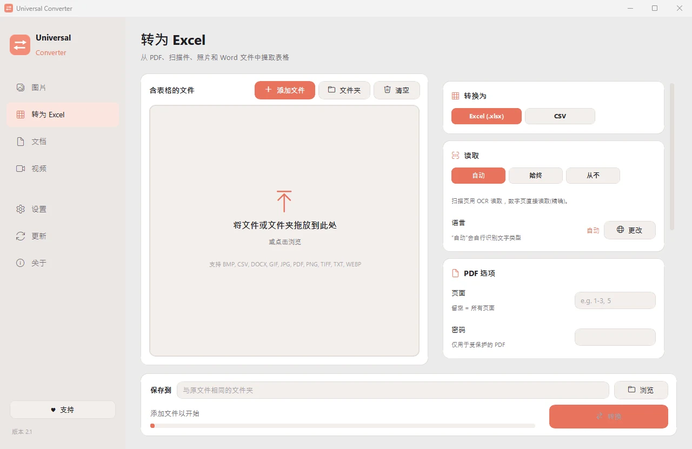

把 PDF 中的表格提取到 Excel
Universal Converter 会找出每一页上的表格，包括扫描页和照片，并用文字识别（OCR）读取。数字仍然是数字，可以直接求和。
操作步骤
- 打开 Universal Converter，在左侧选择转为 Excel。
- 把文件或整个文件夹拖入窗口，或点击“添加文件”。
- 选择 Excel（或 CSV）。对于扫描件，选择文字的语言，或保持自动。
- 点击“转换”。新文件会保存在原文件旁边，或保存到你选择的文件夹。

为什么离线处理？
Universal Converter 在你自己的电脑上完成工作。文件保持私密，大文件也没问题，而且不联网也能用。